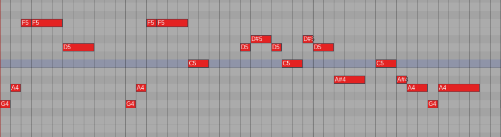
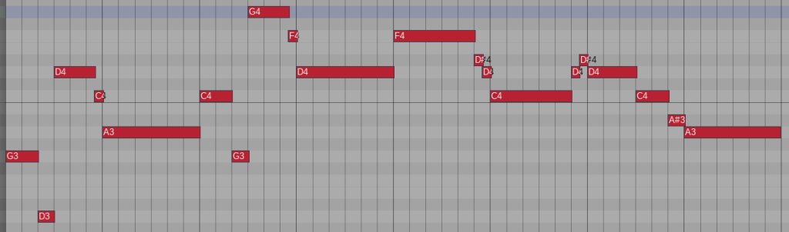

Haven‚Äôt written any music since the last Impressions Jam, so this will hopefully get me to make something üòÑ, and also a good change to give my linux audio setup a proper test to see how holds up in actual use cases.
I’ve used in linux before in a previous Impressions jam, but I had some issues getting my non native sample libraries working without performance issues (EW Play, Kontakt).
But now that I’ve got my Hollywood Orchestra (Play version) and Kontakt working, I’m going to hopefully try and do some orchestral stuff for this jam to see if the WINE/Yabridge setup will work on an actual project.
I made a quick template in reaper so i can just start writing as soon as the jam starts and I get an idea, but after a bit I came across a weird issue with the Play VST.
After going over a certain amount of tracks using the Play VST, the plugin windows turned black or unresponsive (but still played sound and worked otherwise normally) and only returned to normal after i then turned some of the tracks off so I was not over the limit, which is really annoying since I cant edit the instruments if I have too many loaded at the same time.
I‚Äôm not sure if i can fix that somehow, but since the jam starts soon I don‚Äôt want to accidentally break my WINE/Yabridge setup before that and will hopefully try to troubleshoot the issue after the jam üòÖ
Another issue I came across with using WINE for all my windows plugins, was that the license manager software ILOK that some plugins like PLAY from EastWest and all of the EVENTIDE and SOUNDTOYS plugins use resets the Machine ID everytime I update my WINE version.
This leads to ILOK thinking I’m on a new machine and then needs me to reactive all my licenses for this “new machine” it thinks I’m on, and someone at ILOK had the brilliant idea, that to remove licenses from a machine requires you to do it on the machine the licenses are activated on….
Which means, that since my WINE update changed my Machine ID i can’t remove the licenses from the now forgotten old Machine ID and need to send a request for all of the companies whose licenses i had on the machine, and ask them to reset those activation for me from their end so i can use them again.
I seriously don’t understand why I can’t just remove the activation’s on the older machine using ILOK License Manager on a separate device without needing to be on the actual machine they are in, since I can do that very easily with all of my Arturia plugins…
Or better, why cant some licenses be moved to the ILOK Cloud service, since that would be the best solution for me at this time, since now I need to remember to deactive all my ilok licenses everytime I tweak any WINE stuff, just in case my machine ID gets reset, just so I don‚Äôt need to wait a few days for all of the developers to accept my reset request üò†.
But at least I came across this issue a few days before the jam and managed to get my license resets before the jam starts and can start right away with everything working.
The theme this around turned out to be 2 motifs provided by FoxHyode, instead of the usual artwork and word prompts that we can choose from to use as the main motif(s) the base our tracks on.
Since i love me some motivic stuff, as soon as I saw the theme I wanted to try and use both of the motives in a single song since It was not really specified that one can’t use them both.
My initial idea was to first play the motive in it’s proper as provided from when it first appears in the track just so listeners can hear “Ah, this it the Motif 1!”, and then start playing around with the motive a bit more, by changing the rhythms and other fun stuff.
First thing i started with was the Motif 2, and came up with this melody where the first parts are the motif as is and then a second half which is something new/different playing around the short then longer note figure i took from the motif and should hopefully help them feel connected to it and a bit to the Motif 1 since it shares the same thing, just as a long then short figure.
For the instrumentation I went with a String section doing the backing harmony and a Flute and Harp playing the melody, and a Celeste and Children’s Choir adding some atmosphere on the latter half
For this next section I wanted to use Motif 1, so I can then start playing around with both of the motives after showing them in the provided form first.
This time i tweaked the motif slightly, but might actually change this later to just match the motif 1:1, but right now felt that it would feel too boring if this part also just started with the 1:1 of the motif + I wanted it to fit the 6/8 time of the first section.
For the second section i went with a lighter feel, with just the strings playing the melody first in the cello’s and then passing to the violins that get harmonized later by the second violins, and the celli and basses playing a rhythmic bass pattern to add some more rhythm (maybe a bit too annoying with the staccatos, might just change them to sustains later..) and a repeating chordal waltz rhythm on the harp and celeste to have a constant beat.
After the initial 3 hour morning session I took a break and came back to work for a few hours during the evening/night and came up with an idea for a sort of action/combat section based on the motifs, but it was a bit late already so i just recorded a improv around the idea on my midi keyboard and if it still sounded good the next day, I would start arranging that.
On the second day (sunday), I didn’t manage to do much, other than to start arranging the action sketch from yesterday a bit with some string staccatos along side some percussion to add a bit more interest.
Still really rough as is, but thinking of maybe adding some Woodwinds to play melodic stuff, or maybe just taking the melody away from the strings and adding that to the woodwinds or maybe the brass, since the brass play the motif in the transition as sort of war horns.
On Monday and Tuesday I didn’t do much other than adding some percussion, woodwinds and brass to the action part, and then also tweaked the reverb to be a bit smoother/less boomy.
Since i wanted to keep the action section from being too bombastic, I wanted to use brass pretty lightly, so I only added some trombones playing some harmony to works as a kind of pad to help make the mid register feel a bit more fuller.
I also added a Flute and a Piccolo Flute playing some doubling and runs to the later part of the section to help make it feel like its moving forward/building up.
I had a pretty solid percussion base already, but after talking to a friend he mentioned about adding a snare drum, so I added a snare accenting the rhythm with some rolls at parts to give a bit more “march” esque feeling.
After tweaking the reverb it feels a lot better than before, but still needs work in setting up the ‚Äúvirtual space‚Äù properly, which I got some good tips for in the jam discord that I‚Äôll try to get right after I get the composing work done on this or I will get sidetracked with that and forget about actually finishing the track üòÇ.
Seems like the export had an issue since there is some audible popping in the audio, but not so annoying that I would be arsed to open the project to export a new file üòÅ
On Wednesday I got a bit bored/stuck with the orchestra stuff I had been working on, so I decided to do what I always do in these cases and started doing something completely different in style.
I felt like trying out some chiptuneish stuff so I took the midi from the action section I’d been working on the prior days on put those on some nes sounds (Magical8bitPlug vst).
The whole retro vibe that came from the chip sounds got me really inspired and made me decide to go forward with a NES esq soundpalette.
Now that I was going for the chiptune I remembered I had RPGMAKER VX ACE on my steam account from when it was a free some time ago, and decided to try and make a short little jrpg game as a sort of in-context demo for all of the music.
I‚Äôve done a couple of demo games before on Godot, but I‚Äôm not really a programmer, so I haven‚Äôt retained any knowledge of all the coding I‚Äôve done on those üòÇ. Luckily since RPGMAKER is pretty much a Lego building type of thing, even a non coder like me can make something on my own pretty quick.
I found some free assets on itch.io after searching a bit and started building the game, so making some levels and events to make it feel like there an actual progression to the game play.
While working on the demo game, the sort of visual feedback i got from making stuff in the engine, I got inspired and managed to get a boss tune and a track for the final shrine/chamber area + VICTORY! and GAME OVER jingles
Later I managed to get the demo game in a state where it was some form of a playable experience,
I had tracks for all the areas/things in the game now, but still needed a track for the main title screen that comes as you boot the game. I’ve been using FoxHyode’s 2 motives almost somewhere on all of the tracks, but I was a bit undecided on whether to have the title music melody have just be one or both in the full form, or something that has bits of them in the theme.
I decided to use the first motive as the base for the main title music, but somehow it ended up sounding too dark to be used in the main menu and was more like a dungeon theme or something.
So because of that, I added an additional area to the demo between the shrine and the outside where you have to defeat to Elder One’s lackey before you can go up the stairs to the shrine and have the new music be the bgm for that area.
If the submissions didn’t have a 5 min max time limit, I might’ve tried writing a new boss track for the Elder One and used the existing boss track for this enemy, but since I would be going over the limit, the music for this fight is just the basic battle theme.
Spent a couple of hours in the morning trying to come up with a new tune for the title screen, and after a while i got something i was somewhat happy with and decided to stop there, then come back later with fresh ears to hear how actually bad it was üòÅ.
After listening back to it later in the evening, I felt that the latter part of the track felt really off to me and started tweaking that.
After the tweaks It felt pretty good to me, so I decided to test it in the actual demo game to see how it felt.
It’s not really as bombastic as I initially imagined what i would make for the titles, but felt pretty good to me in-context!
I then added a little story text scroll before actual gameplay, to try and give some info on how to actually progress/finish the context demo game.
I‚Äôm still not sure if I‚Äôm uploading this anywhere, since the version of RPGMAKER I‚Äôm using (VX ACE) does not support html/web export, so raters and anyone wanting to give it a try would need to download the really sketchy looking GAMENAME.EXE file that would then extract the game files to a directory they choose üòÇ.
But as things are now, I’m probably going to submit what I have now tomorrow, but first I’m going to get my volume levels/mastering uniform.
So, most of the tracks felt pretty OK to me, so all that was left was mastering everything and recording the gameplay footage of the context demo rpg game.
While doing the mastering I felt that I could tweak the FOREST track a bit, but now as I write this after submitting, I realized that I actually fucked with the loop a bit, and now the loop still works, but it‚Äôs slightly jarring. What‚Äôs done is done i guess ü§∑‚Äç‚ôÇÔ∏è.
I also decided to whip up sheet music for the tracks in Musescore, but that ended up taking an hour, since the program crashed randomly when doing undo/ctrl+z.
I’ve used musescore before in linux with no issues and it performed better than on windows, at least on my machine (musesounds glitches a bit on windows, but works stellar in linux for some weird reason).
I’m guessing that I’ve done something wrong when I installed it and should reinstall it, but didn’t want to start doing that with the deadline closing in, so I tried to work around the crashing and managed to get the sheet music done.
After I got the sheet music done, I made a quick video for the tracks with the demo game title screen for the graphics/art and recorded the in-context demo so people don‚Äôt have to download the game to their PC (especially since the .EXE file looks sketchy as hell, at least to me üòÇ)
Now I was pretty much done and went to upload and submit the project, and after that I started writing the submitting day segment of this devlog (so what you are reading right at this momentüëã).
For some closing words for this jam, I have to say that doing the little context demo game really fun and I wouldn’t have wrote as much music as I did without working on that alongside composing the music.
I had a really good ebb and flow with doing something in the game for the music, that then gets me inspiration for a new track or some tweaks and then vice versa from that.
I’ve had sort of the same inspiration effects before on jams, i.e while writing devlogs like these, but this time it was a lot more.
The next day after submitting I listened back to the youtube upload of the music and realized I had also fucked up the looping on DUNGEON and cut off a bar of rest from the end of FOREST, which is why it loop backs so jarringly…
The jam deadline got extended by 2 days, but since I already managed to submit before the extension, I decided to just keep the bad loops in and change the submission to go for the EASY difficulty instead of the HARD difficulty where the tracks need to be seamless loops (which FOREST and DUNGEON are not atm).
And there were already a couple of tracks that were not meant to be loops, like TITLE SCREEN and the VICTORY! and GAME OVER jingles (I also forgot to show the game over bit in the demo game recording‚Ķ üòÖ).